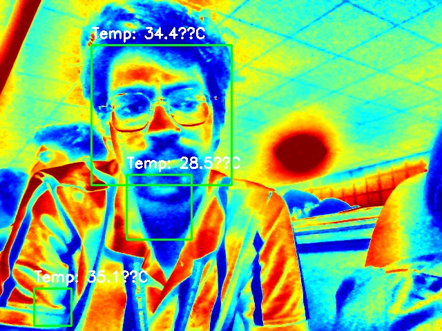

About 7th Sense
This website utilizes a thermal camera to detect diseases like COVID-19, Influenza, and more. Click "Capture Image" to start the disease detection process.
Example of Detection
Diseases Detected
- COVID-19
- Fever
- Influenza
- Other Heat-Related Conditions